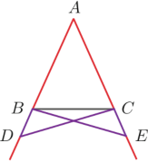

Proposizione I.5
Proposition I.5 (Pons Asinorum). The base angles in an isosceles triangle are congruent. If the sides of an isosceles triangle are extended beyond the base, the angles formed under the base are congruent.
Proof Let ΔABC be isosceles with AB ≌ AC. Extending AB and AC past the base BC, we can invoke Prop. I.3 to choose D on AB and E on AC so that AD ≌ AE. Form segments DC and EB. We have SAS (I.4) for ΔADC ≌ ΔAEB, since ∠CAD is common. It follows that DC ≌ EB, ∠ACD ≌ ∠ABE, and ∠ADC ≌ ∠AEB. Since the whole AD ≌ AE, and the part AB ≌ AC, CN3 implies BD ≌ CE. Since ∠BDC ≌ ∠BEC, and BC is common, we have SAS for ΔBDC ≌ ΔBEC. From there, ∠CBD ≌ ∠BCE, which proves the second assertion of the proposition. We also have ∠BCD ≌ ∠CBE. Since ∠ABE ≌ ∠ACD, CN3 gives us ∠ABC ≌ ∠ACB, which proves the result.□
Sul nome
Ci sono due possibili spiegazioni per il nome (termine latino per "ponte degli asini"): la più semplice è che lo schema utilizzato per la dimostrazione assomiglia a un ponte vero e proprio. Ma la spiegazione più popolare è che è il primo vero test negli Elementi dell'intelligenza del lettore e come un ponte verso le proposizioni più difficili che seguono. Qualunque sia la sua origine, il termine pons asinorum è usato come metafora per un problema o una sfida che separerà i sicuri di mente dai semplici, il pensatore agile dal lento, il determinato dall'esitante: rappresenta un test critico per verificare la capacità o comprensione. Un altro termine medievale per il teorema è stato Elefuga che, secondo Ruggero Bacone, deriva dal greco elegia miseria, e dal latino fuga, cioè "fuga dei miserabili". Anche quest'etimologia è dubbia, e vi fa riferimento Chaucer al termine " fuga dei miserabili" (in inglese "flemyng of wreches") per il teorema.